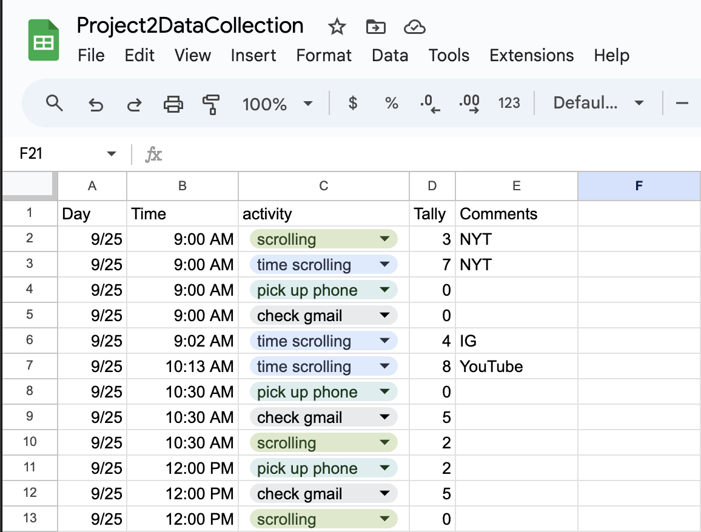
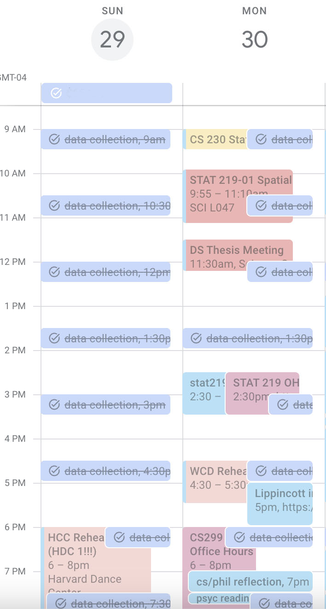

My Tech Use Report
Examining The Effects of Controlled Media Consumption
Introduction
In this project, I will examine my own use of technology both inside and outside of the classroom. In Vallor’s chapter on “Cultivating the Foundations of Technomoral Virtue,” she speaks on the importance of reflective self-examination. By developing a critical eye for one’s actions and attitudes, one can strengthen their abilities for self-control and refrain from mindless self-indulgence. Vallor describes the development of this reflective self-examination in stages. Self-indulgence or incontinence is when one is unaware that their desires are bad and therefore do not move to resist them. It is with knowledge that this evolves into continence, where one is aware of the desires that need controlling. Over time, one can develop temperance, in which one is only moved by truly good desires (Vallor, 2016, p. 85-86).
Through this project, I was interested in learning how my media consumption habits have changed since I have deleted the Instagram and YouTube apps from my phone. I had noticed that in the first few days post-deletion, I would instinctively pick up my phone and navigate to where my Instagram or YouTube apps were located on my home screen. I was curious if the remnants of this “media addiction” would persist over time or if I would no longer have this urge to scroll or find another recipient for my attention. Through quantitative methods and digital traces, I will collect data on the following questions:
- How many times do I find myself trying to find something to scroll through when I’m on a device?
- How many times do I pick up my phone to waste time (not looking at an email notification/without specific intention)?
- How long do I spend scrolling on some media platform?
- How many times do I check/look at my email?*
- What kind of content do I consume on YouTube and the New York Times?
*Originally, I did not count the number of times I checked my email, but on the third day, I realized that I had been substituting my usual media content with my Gmail inbox.
 Figure 1: Screenshot of Manual Data Collection Tools
To collect the data on the first four questions, I entered a week-long period of self-surveillance
from September 25, 2024 to October 2, 2024. With the assistance of a Google Calendar task, every 1.5
hours during my waking hours, I noted the tallies or minutes for the four questions (Figure 1).
I was curious to analyze the type of content I consumed on YouTube and the New York Times because
I predicted that I used these platforms to take a break from any stressful work and therefore consumed
only entertaining and relaxing content. To collect my YouTube watch history, I accessed my digital
trace data through Google Takeout. Because The New York Times only shows you your read history on the
mobile app, I had to seek other ways to get my browsing history. Through ChatGPT-generated code that
was prompted by Prof. Mustafaraj, I filtered my Chrome browsing history for New York Times websites.
In order to categorize the raw data from both sources, I enlisted the Gemini API, with help from
Johanna Lee, in order to use a natural language processing approach to categorize the videos or websites
into set categories. With both my manual collection and digital trace data prepared, I could then create
visualizations showing my results.
In addition to these quantitative research methods, I kept a personal journal to reflect on each
day of my self-surveillance. From these entries, I hoped to gain insight into the numbers of that day,
understanding the emotional context of my scrolling decisions.
Circle sizes represent time spent: YouTube (66.48%), Facebook (5.26%), Instagram (37.67%), New York Times (21.61%)
From examining the media that I like to consume during my “scrolling time,” we can see that I spent the largest amount of time on YouTube. In fact, I spent the majority of my “scrolling time” on YouTube. Because of the way I timed this data to be the amount of time I was on this platform, I could understand that I spent the most time on YouTube because of its longer-form content compared to Instagram or Facebook. Even though doomscrolling on the other platforms was very possible and could have led to large amounts of time spent consuming content, it did not impact me during my self-surveillance. After YouTube, I spent the most amount of time on Instagram and The New York Times, which are some of my favorite platforms in order to catch up with friends, watch content from my favorite creators, play some mind-stimulating games, or read about news. I spent the least amount of time on Facebook, the platform which I only check when I want to scroll and check the different Wellesley Facebook groups I am a part of. After understanding the platform breakdown of my “scrolling time,” we can now look towards gleaning some information about the type of content I like to consume from YouTube and New York Times specifically.
![An abstract visualization of the manual data collection: scrolling (urges to scroll), gmail pickups, and time scrolling. There are seven black parallel horizontal lines representing the seven days of self-surveillance. There are 12 invisible notches on each line to represent the 12 time intervals of data collection. Pink concentric circles indicate the number of scrolling urges. Blue radial lines indicate the number of Gmail pickups. Orange waves indicate the number of minutes scrolling on a media platform. Stacked orange waves indicate separate scrolling activities within a time interrval. Overall, we see a lot of blue radial lines (gmail pickups) consistently throughout the day. Pink concentric circles (scrolling urges) are more rare but increased at the very end of the last day. Orange waves were concentrated at random times throughout the day for most days.](graphs/manualData.png)
Figure 2: Manual Data Visualization Art (Inspired by the Dear Data Project)
Journal Entries
After analyzing the themes of my journal entries, I found that the main indicator of how much time I spent consuming media or how many times I wanted to do so was my perception of how much “free time” I had. In every entry, I noted whether or not I was very busy or free that day and how it provided context to my data.
Free Time
Looking at the data comparing how many times I tried to find something to scroll through and how long I actually spent scrolling (Figure 2), I did not always scroll when I had the urge. In my journal entries, I wrote about how the self-surveillance nature of the data collection might have influenced my media consumption habits. Even on the first day, I noted that I felt conscious about my time spent scrolling: “I definitely was conscious about the time I spent doing these things, so I felt that might have contributed to the single digit durations for these activities.” Because of this newfound intentionality, I learned to notice how long I was scrolling or even preemptively stopped myself from scrolling when I felt an inclination:
Beyond feelings of intentionality and consciousness, the self-surveillance also allowed me to identify ways that I already or will start attempting to control my media consumption.
Conclusion
In this research process, I have found that tackling four questions through manual data collection was challenging. Over time, I found that I was not cognizant of when I was picking up my phone for a break. Therefore, the data collected had a lot of human error, and I did not include phone pickup data in any visualizations. Overall, the manual data collection process allowed for a lot of human error, as it relied on my own surveillance of myself. Because of its self-inflicted nature, the data collection was ultimately very biased and might not have reflected a true week in my life. As I noted in my journals, knowing that I had to write down my media use, I would stop myself from scrolling when I felt the urge when I would not otherwise. The digital trace data also had its own limitations. The browsing and watch history were limited to the account that I requested from. Therefore, there might have been a few videos and articles that I had assessed on a different account or profile that were not included in the dataset. During the analysis process, my reliance on Gemini to categorize the content made it very susceptible to the limitations of large language models. Some content might have been mis-classified. Despite all of these limitations, the overall study design of data collection every 1.5 hours with the reminder of a Google Calendar task worked really well to remind me to tally data. Additionally, the large language models were a great resource to implement my visions for the data visualizations. I hoped to visceralize data in my visualizations, leveraging emotion and visual minimism as D'Ignazio and Klein advocated for in Data Feminism (2020). I wanted interactivity and accessibility to be a guiding principle in my project. However, I realized that the primarily visual nature of my data would not serve those with visual disabilities well. Even with the alternative text of my images, it is only through intentional presentation of information in multiple sensory formats that I would be able to be truly accessible.
Through this period of self-surveillance and reflection, I have learned that by removing easy
access to these sources of scrolling, I have been able to be more intentional and cognizant about
the time I spend consuming content online. Furthermore, I found that I replaced my reliance on media
platforms to fill short periods of time with Gmail. While that is more of a “productive” way to take
a break from schoolwork, it does not eliminate my reliance on electronic devices and applications.
Through the reflections I made in my daily journals, I identified the reasons behind my desire to
scroll and ways that I can practice self-control. By analyzing the themes of the content I consumed
on YouTube and the New York Times, I have a better understanding of what I like to watch and read
when I want a break from my school work. In conclusion, while this process has not fully led me to
develop temperance, I have certainly acquired knowledge about my bad desires that need controlling
and evolved my self-indulgence into continence.
Citations
Vallor, S. (2016). Technology and the virtues: A philosophical guide to a future worth wanting [eBook edition]. Oxford University Press. https://doi.org/10.1093/acprof:oso/9780190498511.003.0007
D’Ignazio, C., & Klein, L. (2020). 3. On Rational, Scientific, Objective Viewpoints from Mythical, Imaginary, Impossible Standpoints. In Data Feminism. https://data-feminism.mitpress.mit.edu/pub/5evfe9yd
Appendix
Raw Journal Entries
9/25
I noticed that most of my media consumption happened this morning. Because it was Lake Day, I felt more relaxed and that I had “free time.” I let myself indulge in scrolling and viewing content on New York Times and YouTube. I definitely was conscious about the time I spent doing these things, so I felt that might have contributed to the single digit durations for these activities. I was so busy in the afternoon, so I didn’t have time to scroll or think about scrolling on any app. Because I’m feeling overwhelmed, I’m curious to see tomorrow’s data, as I try to get work done. Will I want to scroll more often to avoid the stressful work?
9/26
Today I noticed that I had more “free time” to do work, which also led me to scroll a bit more or have the inclination to. Because I don’t have these apps on my phone, I noticed that I mostly did these things on my laptop on the browser. Of note, in class today, I felt myself wanting to scroll through the news in order to stay awake in class. I find that the passive active reading of news would be better than just dozing off completely in class. I’m interested in what makes me choose YouTube vs New York Times vs social media as an instinct when I want to take a break.
9/27
Today was a very interesting day for data collection. I had a very hectic day, with class and then 2 hours of a job interview and then 5 hours of a student org event. Therefore, I only had two tallies related to scrolling media use. I have now noticed that for the past two days, instead of resorting to social media or some other form of content when I need to take a break, I am checking my email. I definitely want to start collecting data on the number of pickups I have for the gmail app or website on my laptop.
9/28
As expected, today had significantly more data points throughout the day. It was the weekend, and I had much more free time. I had long stretches of work time, and I found myself needing to take breaks more often. Additionally, I was on Instagram more often because of student org-related stuff. However, I noticed that it was much more intentional when I chose to go on the site. I was specifically checking messages or notifications. I think I lean more towards YouTube or NYT for breaks to consume content. I think I have found them to be more entertaining and fulfilling. I definitely noticed a lot of pickups of Gmail when I also want a break from my work. It satisfies a certain itch to be constantly deleted spam email or organize the incoming messages.
9/29
I was interested to discover today how I would manage my media consumption, as I had a lot of unscheduled free time to do my work. I definitely felt that I controlled how often I checked my gmail today after realizing how often I do it. I think it helped that I closed the tabs for my gmail accounts on my laptop, so I wouldn’t just see the notification change when I got new emails. I am curious to see if this holds up during the week when I receive many more emails. I also think my urges to find something to scroll were not as strong since I spent a lot of my time working on the phone with people in order to stay productive. Additionally, I’ve noticed that I don’t feel as satisfied scrolling through Instagram for very long. I often go on it now with a very specific intention to look at an account or when I do look at the feed, I don’t scroll for very long. I wonder if this is because the UI on the website cannot fully replicate the addictive quality of scrolling on a phone.
9/30
I surprised myself with how little I scrolled today. I had a peak in my checking of gmail between 4:30-6pm when I believed I got a few emails whose notifications were too big to miss. I feel much more intentional when I have “scrolling time” and definitely notice less of an inclination to scroll during the middle of the day. Because I feel much more pressed for time these days with my academics, I am constantly thinking about what task I can accomplish next and don’t think about the break I could get from scrolling. Reflecting on my journal entry yesterday talking about the UI on Instagram’s desktop website, I remember that when I used to have the Instagram and TikTok apps, I would spend so long, triggering the 30-minutes of scrolling notifications because of the infinite scrolling in their short-form video contents. I believe removing easy access to that by deleting my apps has been extremely helpful. I do notice that when I go to bed, I do still miss that scroll time I usually have. I found that I would do this because I would have trouble going to sleep and felt restless. I still feel that now, but I give myself some auditory stimulation through a podcast. Because of its long form content, I definitely don’t feel the same satisfaction and can still feel restless. I think the infinite scroll kept me distracted from noticing my inability to fall asleep, but in turn kept me up.
10/1
I definitely reverted to old scrolling habits today. I have finally felt less stressed and anxious after a difficult two weeks, so with this relief of my worries, I felt more relaxed and able to get restless and bored during long stretches of free time to work. This is definitely reflected in how long and often I wanted to find media to consume. I was able to feel the satisfaction of looking through Instagram a bit longer today, catching up on my friends that are far away. My urges to scroll were like an itch I had to scratch. I couldn’t talk myself out of it to do work, and I feel like I finally deserved this break to scroll after working so hard and being so stressed the past two weeks.